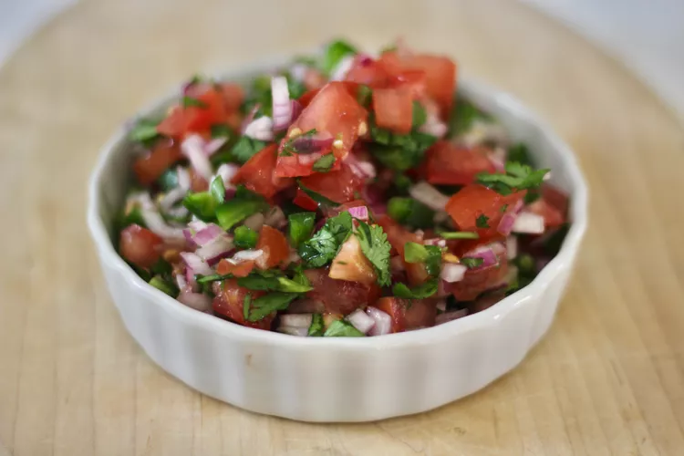

Pico De Gallo de Alicia

Description
This is a recipe from allrecipes of an authentic Mexican salsa made with tomatoes, onions and jalapenos
Ingredients
- 2 tomatoes, diced
- 1 red onion, finely chopped
- 2 jalapeno pepper, seeded and chopped
- 2 spring cilantro, finely chopped
- 1 clove garlic
- 1/2 small lime, juiced
- 1 teaspoon garlic salt to taste
Steps
- Mix tomato, red onion, jalapeno pepper,cilantro, garlic and lime juice in a bowl
- Season with garlic, salt and stir
- Cover bowl with plastic wrap and refrigerate at least 4 hours